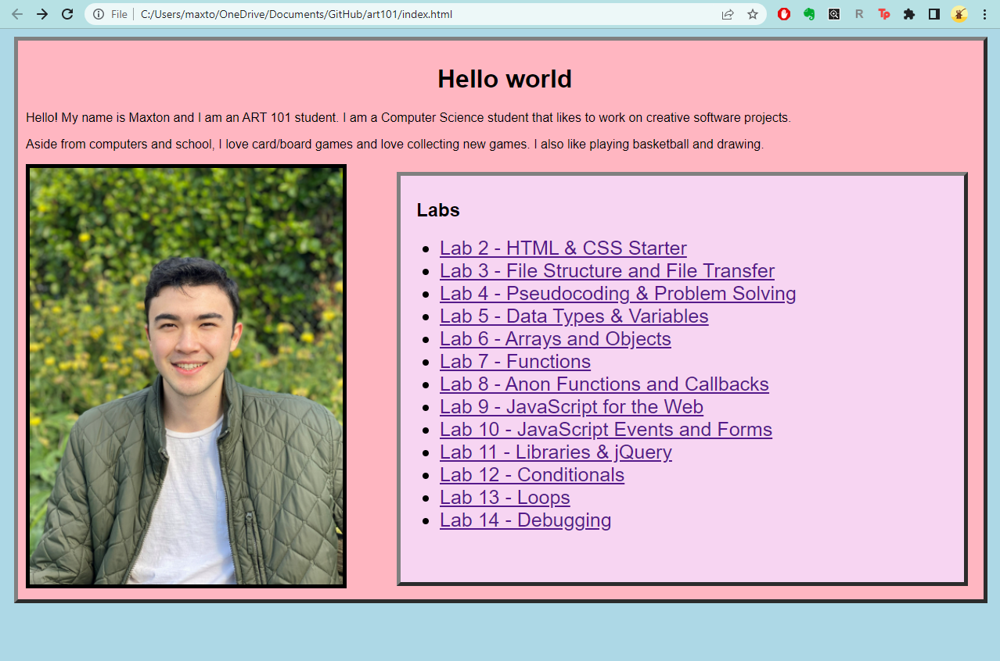
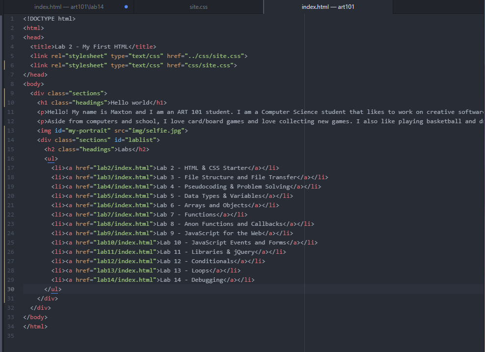

The following is a screenshot of my updated homepage along with the changed code. Initially I did not think there would be much to change as I felt like all the labs worked well enough. I decided to make my home page better by adding CSS. This changed more than the style of the home page because all the other labs were also connected to the homepage CSS file. So, I had to modify the CSS for a lot of the other labs which took a lot of time. I had to figure out the specifity of the styles and how to restore the old CSS formats.
 